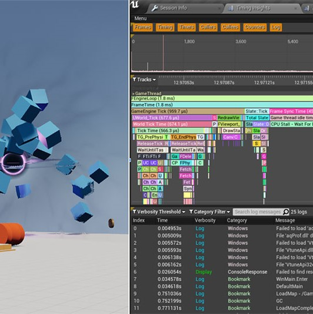
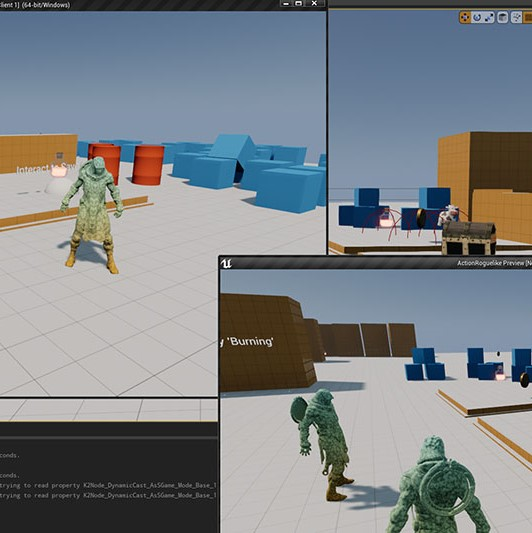
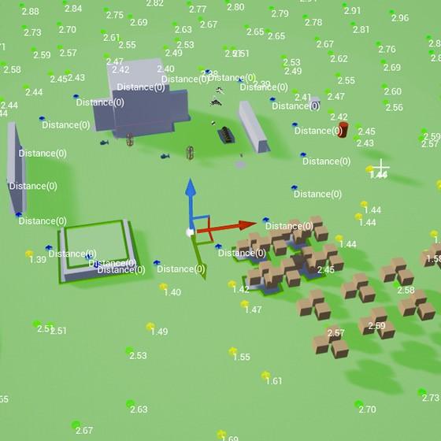

Game development course - Unreal Engine C++



I took this course as a trainee before start working in LOTF2. The major features I learned in this course include:
- Building C++ Game Framework.
- Combining C++ and Blueprint for flexible game logic.
- Unreal’s Gameplay Systems.
- Event-based Programming Principles.
- AI Programming (Behavior Trees, Blackboard, EQS, Custom C++ Nodes).
- Multiplayer Networking (Replication architecture, low-bandwidth, best practices).
- Saving Game State to Disk (Saving/loading player progression and world state).
- Performance Profiling Tools (Unreal Insights & in-editor tools).
- User Interfaces with UMG (using Event-based Principles).
- Async Asset Loading & Soft References.